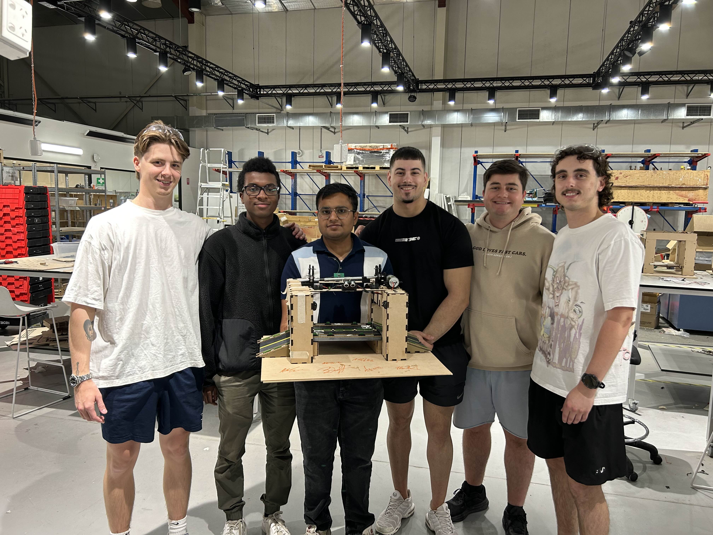
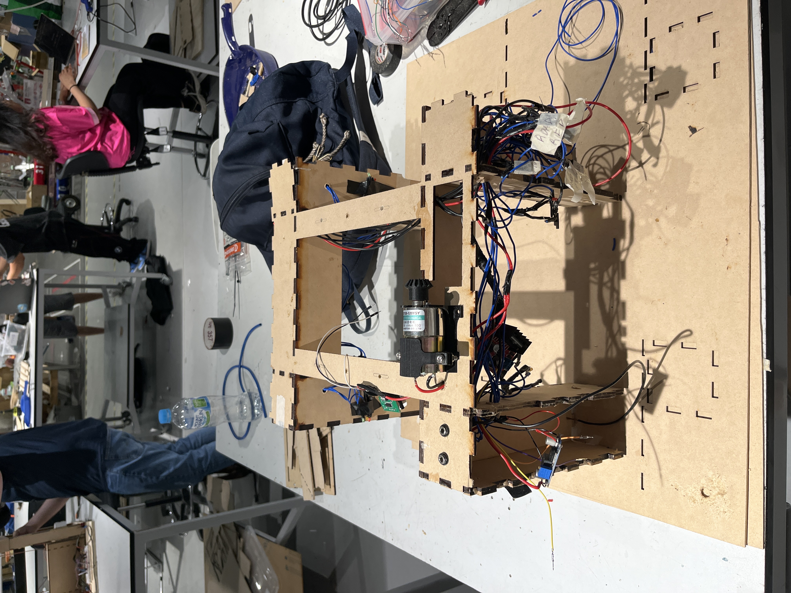
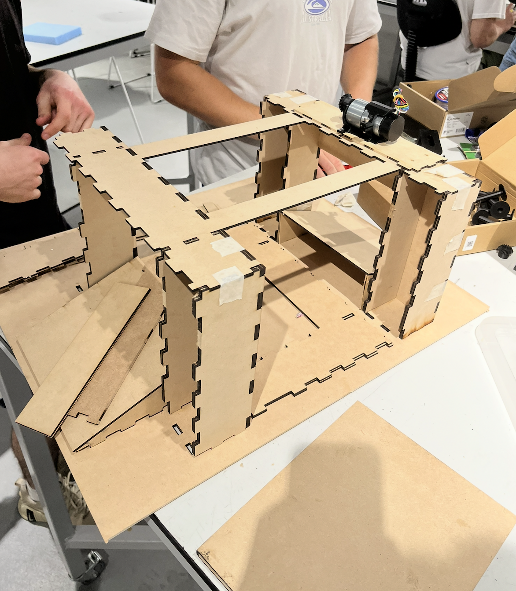

Overview
The Smart Bridge Control System is designed to automate a drawbridge using embedded hardware,
real-time detection systems, and a Wi-Fi-enabled interface. The system manages both marine and road
traffic using ultrasonic sensors, IR detectors, servo motors, DC motors, and signalling LEDs.
Approaching vehicles or boats are detected automatically, triggering bridge movement and the
corresponding traffic signals. A live status dashboard enables system monitoring and manual override.
Features
- Ultrasonic detection for marine vessel detection
- Light sensors for vehicle detection
- DC motor + servo bridge movement simulation
- LED traffic light signalling system
- ESP32 microcontroller with Wi-Fi
- Web-based dashboard for real-time status and control
- Modular software & hardware architecture
System Architecture
- Hardware Layer: Sensors, servos, motors, LEDs connected to the ESP32.
- Software Layer: Embedded C/C++ firmware running bridge logic.
- User Interface Layer: HTML/JS dashboard for monitoring + control.
Team Contributions
- Trystan: Ultrasonic + motor logic, integration, hardware/software alignment.
- Tom: Traffic system design & IR sensor handling.
- Walter: UI improvements & sensor support.
- Agrim: Wi-Fi communication & live status updates.
- Kyle: Electrical system wiring, LEDs & testing.
- Nick: Prototyping, servo mechanics & integration.
Testing & Validation
- Ultrasonic sensor calibration
- Infrared vehicle detection testing
- Motor/servo movement verification
- Real-time UI response testing
- Full system integrated test
Technologies Used
- ESP32 Microcontroller
- C++ / Arduino Framework
- HTML / JavaScript
- Arduino IDE
Project Images


